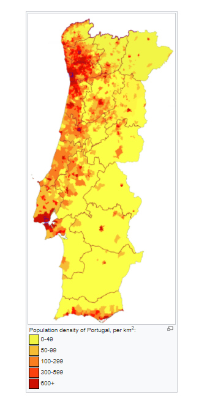
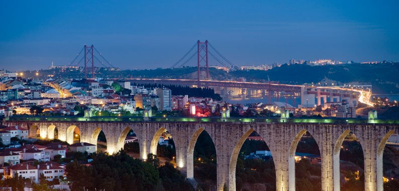
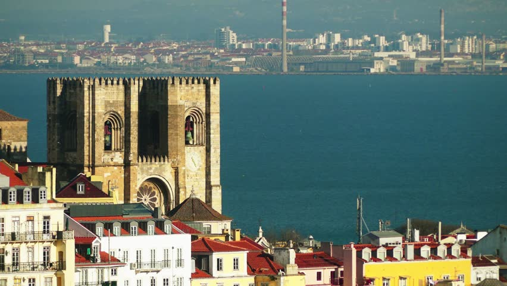

This article is about the demographic features of the population of Portugal, including population density, ethnicity, education level, health of the populace, economic status, religious affiliations and other aspects of the population.
Portugal is a fairly linguistically and religiously homogeneous country. Ethnically, the Portuguese people are mainly a combination of ancient paleolithic populations, and the proto-Celtic, Celtic and Iberian tribes, para-Celtic Lusitanians. Some other groups, like the Romans, Germanic (Visigoths, Suevi, Buri, Alans and Vandals) and later the Moorish (Berber), Sephardic Jewish, and the French also passed through the country. Portugal was born of the Christian Reconquista.
Today, Ukrainians, Moldovans, Romanians, Russians, Bulgarians, Brazilians and Venezuelans form the major foreign communities in the country. Members of PALOP countries (Portuguese-speaking African countries) are also immigrants and form communities in the country.. Portuguese is spoken throughout the country, with only the villages of Miranda do Douro's Mirandese language recognised as a locally co-official language.

Portugal Climate
Portugal is mainly characterized by a warm temperate, mediterranean climate with a distinct wet season in winter. During winter, Portugal experiences a similar temperature pattern to the Spanish coastal towns, i.e. average daytime maxima of about 16°C (61°F). However, the Portuguese resorts are much wetter, with only about 14 dry days on average. On average 5-6 hours of sunshine can be expected per day. A gradual warming-up process takes place during the spring months, daytime average maximum temperatures reaching up to 22°C (72°F) by May. The Atlantic-facing coast remains wetter than the Mediterranean-facing Spanish coast, with about 18 dry days per month. Daily sunshine hours number about 10 on average.

Lisbon Biggest City of Portugal
Lisboa GCTE é a capital de Portugal e a cidade mais populosa do país. Tem uma população de 506 892 habitantes,[2] dentro dos seus limites administrativos. Na Área Metropolitana de Lisboa, residem 2 821 697 pessoas (2011), sendo por isso a maior e mais populosa área metropolitana do país. Lisboa é o centro político de Portugal, sede do Governo e da residência do chefe de Estado. É o "farol da lusofonia" (Daus): a Comunidade dos Países de Língua Portuguesa (CPLP) tem a sua sede na cidade. É ainda a capital mais a ocidente do continente europeu na costa atlântica.

Religion of Lisbon
Portugal currently has no official religion, though in the past, the Catholic Church was the state religion. The most predominant religion in Portugal is Christianity, mainly Catholicism. According to the 2011 Census, 81% of the population of Portugal is Catholic, though only about 19% attend Mass and take the sacraments regularly, while a larger number wish to have their children baptized, be married in a church, and receive Last Rites.
Although Church and State were formally separated during the Portuguese First Republic (1910–1926), a separation reiterated in the constitution of 1976, Roman Catholic precepts continue to have a significant bearing in Portuguese society and culture. The educational and health care systems were for a long time the Church's preserve, and in many cases, whenever a building, bridge, or highway was opened, it received a blessing from the Clergy.
Although Church and State are formally separate, the Catholic Church still receives certain privileges.Statistically, religious practice increases with increasing age, the younger generations showing less evidence of religious practice than the older..
 More information